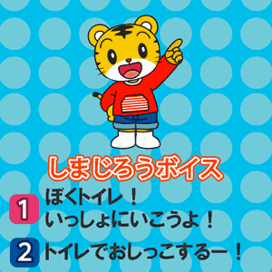
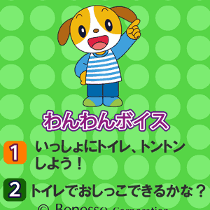

<!-- main -->
<div id="main">

<div id="kyouzai">

<div class="block">
<h3>トイレおさそいボイス</h3>
<p>トイレに連れて行きたい時に、しまじろうやわんわんの声で誘ってくれるボイスです。パペットの中に携帯電話を入れて使うのもおすすめです。</p>
</div><!-- /.block -->


<div class="block">
<p class="play">■使い方<br/>
ボタンをタップして、次の画面に進んでください。</p>
<p class="tx_gray">※音声つきです｡マナーモードを解除してお使いください｡</p>
</div><!-- /.block -->

<div class="block">

<p class="center">しまじろう</p>
<a href="src/petit_1104_17_shimajiro_android.swf" data-role="button" data-theme="e" rel="external">ダウンロード</a>
<br />
<br />

<p class="center">わんわん</p>
<a href="src/petit_1104_17_wanwan_android.swf" data-role="button" data-theme="e" rel="external">ダウンロード</a>
<br />
</div><!-- /.block -->


<div class="block">
<a href="http://www.youtube.com/watch?v=xHUpoYfdSQ4" style="color:#ff6699;" rel="external"><span style="color:#ff6699;font-size:medium">ボイスの使い方動画「ボイスって<br />なあに？」を見る</span></a> (約30秒)<br /><br />
<p class="tx_gray">※モバイルYouTubeを利用して動画をご覧いただけます。<br />
※モバイルYouTubeは大量のパケット通信をおこなうアプリケーションです。携帯端末からYouTubeで動画を見る前に、ご契約の携帯電話のプランが「パケット定額サービス」かどうかご確認ください。<br />
※ご利用の機種によっては動画が見られないことがあります。<br />
※音声つきです｡マナーモードを解除してお使いください｡<br /></p>
</div><!-- /.block -->
</div><!-- /#kyouzai -->

</div><!-- /#main -->
